In its present stage, CACB is still (energetically) in the experimental stage when it comes to the beers we brew. We (I) struggle to pass up an historic, traditional, new, different, on-the edge recipe. I began (long time ago) with; established (extract) recipe kits; quickly moved to extract-with-grains recipes; swept then into all grain (established, clone) recipes, but couldn’t help but modify them then led me create my own. As is described in the breweries description, even my ‘flagship’, repeated brews will very likely vary with each batch, yet they will ‘align’ with the established beer style (Brew Judge Certification, BJCP guidelines) with (we hope) slight improvements over time. I have certainly created very good brews by ‘accident’, but I would not label or market an established (flagship) unless it met what I and my clients would expect of that style. All this said, let’s look at the ‘tap list’.
This is an historic, pre-prohibition beer that originated out of Louisville Kentucky. It is a ‘darker’, malty beer made with what was readily available at the time, including corn. It was designed for ‘mass production’ and could be sold within 10 days of brewing. It has a unique taste and refreshing nature, designed not to ‘weigh’ the drinker of it down. I brewed it because Louisville is where my son lives and a couple of local breweries there started brewing it from the original recipe. I had the opportunity to try, and well, it went from there.
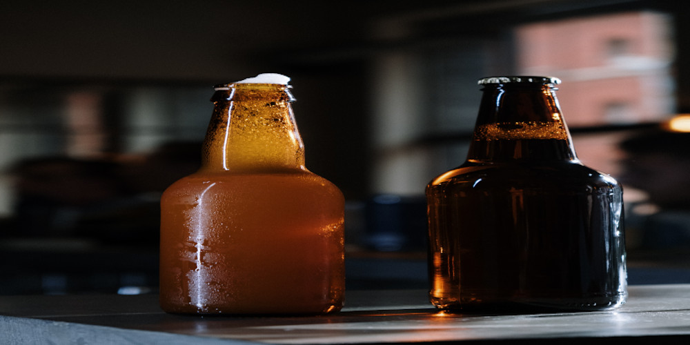This was the second batch from my brew system. Well, things still didn’t go perfectly, but the end result is good (and I was spot on my original gravity). I learned a lot from this batch as well. This is a standard Kolsh recipe where I added blood orange puree to the secondary. The Kolsh itself (I thought) was average, but the addition of the citrus really sparked it off. This is an easy-drinking beer. See if you can catch the blood orange taste. Certainly, you can see the slight red-orange hue.
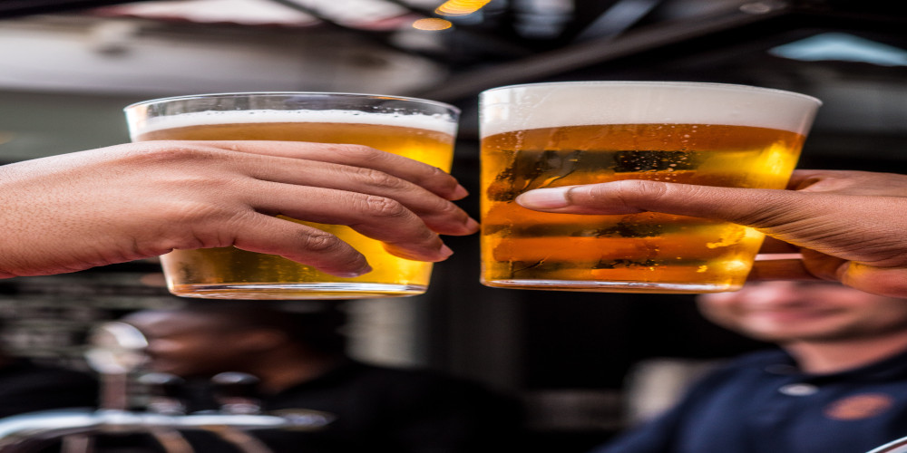This is a German wheat beer (weizen for wheat). The grain bill for this one is nearly 50% wheat, so you should taste the uniqueness of the wheat (steer clear if you have a gluten intolerance!). It has a slight haze (also form the wheat) and is lightly hopped with noble (European) hops. I bumped up the hop-pop with some dry hops. It is a smooth tasting, easy drinking summer ale (on the border of a lager).
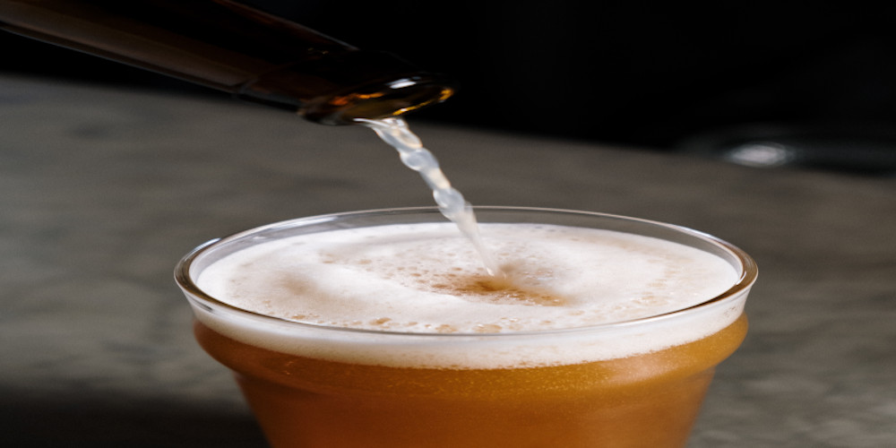The base of this (pale ale) is a clone of a beer out of a brewery in Vermont that I brewed for Bryan Slinker’s retirement party. I tapped off a couple of gallons of that and added some strawberry extract. I have yet to see a commercial beer with strawberry in it, but someone has had to have done it with the proliferation of fruity ales out there these days. I am not sure the strawberry is truly detectable, but the ale is good and the addition adds a little ‘twang’ to the taste.
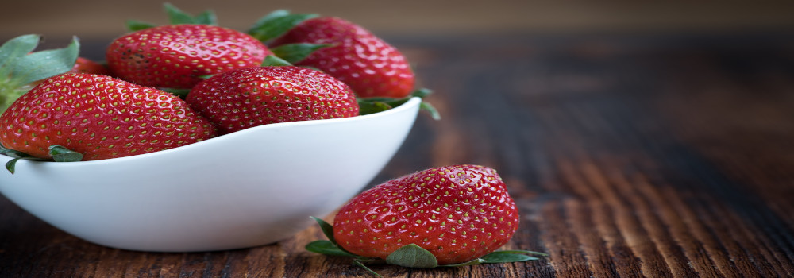With this one, I wanted to take advantage of my ripening new hop crop to create a brew with only my hops; the fresh ones and the stored ones from previous years. Since I only (presently) grow Willamette (named for the Willamette Valley in OR), That is what this one has. I reached back to a previous simple, good base ale. My red ale met the bill. I used my hops for the bittering and flavor portions with the fresh hops (harvested that day) in the whirlpool step to magnify the flavor additions. I think it all turned out well.
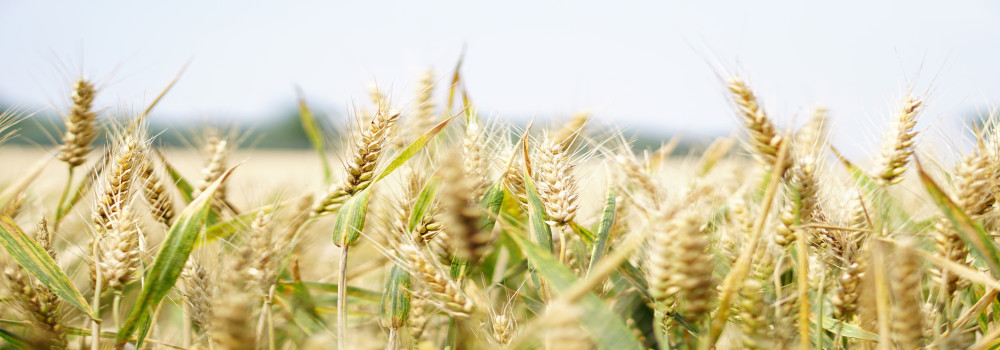This is a unique historical beer, originating (and still being brewed) in rural areas of middle Europe. The unique aspect of it is that, midway through the mashing process, the grains are removed from the liquid and baked in the oven (about 180 deg) for about an hour, then returned to the liquid to finish the mashing process. It results in a rich, maltiness without the high alcohol we often associate with these ‘thicker’ beers. Likely, the original (historic) idea was an everyday ‘table’ drink that was, at that time, safer than water. It is a very easy-drinking, smooth (but not bland) beer that does not put an end to the workday, due to becoming ‘tipsy’. That said, I still wouldn’t recommend operating heavy equipment while drinking it. ABV: 4.5%. Note: This style does not contain a high carbonation level, so don’t be surprised by the relative ‘flatness’.
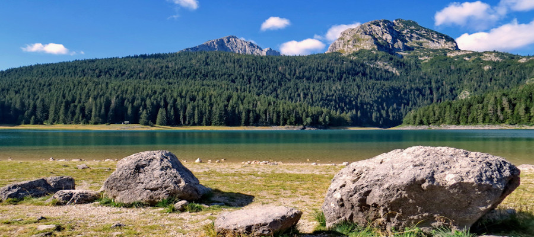This is an amber/brown ale base with a large percentage of wildflower honey (ode to the honeybee). I have always been interested in using honey for brewing and have also tried a few meads, which are created almost totally from honey. Part of this interest is because I love honey, the other is the prevalence of beekeepers in this area and the recent upsurge in interest in this area. This is a light drinking, moderately malty, low end of bitter ale. See if you can taste the honey.
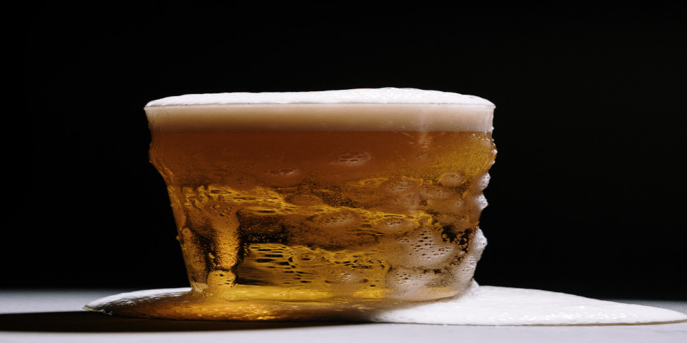More strawberry…another brew idea. This is a true recipe that I followed with (very little) deviation. What makes it a milk shake IPA are three main ingredients: wheat malt (adds cloudiness and mouth feel), lactose (i.e., milk protein) and (lots of) high-alpha hops. I used a fairly new hop, Jarrylo) which is about 15% alpha. Not the highest in the hop-pop realm, but up there. The addition of he sugars in the strawberry resulted in a very thorough fermentation, and a ‘dry’ finish, but resulted in a loss of some of the expected cloudiness and lowering eh strawberry taste (especially compared to the season). LL that aside, (I think) it tastes good and is representative of the style; albeit on the pale ale end of the IP scale as far as bitterness goes (no cheek puckering on this one.
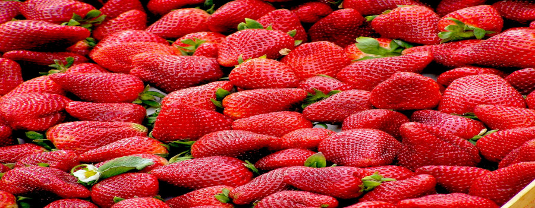This is a strong ale with (real) Scotch overtones. A ‘wee heavy’ by the brew guides. This is a very malty (carmelly) brew that is better sipped than ‘downed’. It was aged in a rye whiskey barrel infused with coffee and maple syrup. Just a hint of the whiskey warming on this one. Nice to have at the end of the day (can’t do much else after drinking it anyway) sitting by the fire.
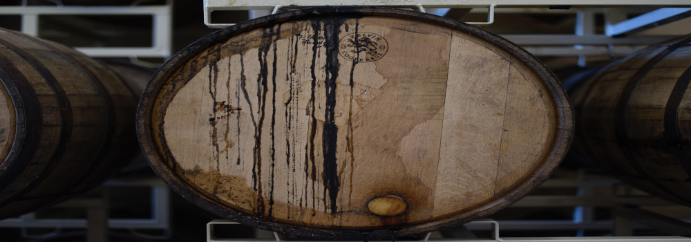Saisons (also referred to as farm house ales) tend to be a mix of ‘common’ or ‘cream’ ales and fruity/sour ales. It is a category with an extensive range of tastes with grain bills that widely vary. That limits the drinker’s ability to know ‘just what to expect’ (i.e., Starbucks), but it adds great flexibility for the brewhouse and a hint of excitement for the taster as you never quite know what you might encounter. Admittedly, I have had (commercial) versions of this that hit all three levels of my rate scale (although I obviously already paid money for it). In this version I focused on the fruity style and having access to a large amount of fresh strawberry puree, I took a fairly mid-range pale ale grain bill and added (a lot) of strawberry. It is a smooth ale, with just a hint of sourness, which compliments the hop flavors well. If you can’t catch the strawberry in this one, well, I can’t help you on that.
This is another split batch with ale MaBK, but in this case I added additional malts and another higher-temperature brewing step to result in a slightly more malty taste than the Mailbock. I am not sure I hit the mark, but it is ‘Good’, at least according to 2 beer judges. This one I also ran through my whiskey barrel, but not to age it, rather to try and pick up some of the maple syrup flavor to help augment the malts.
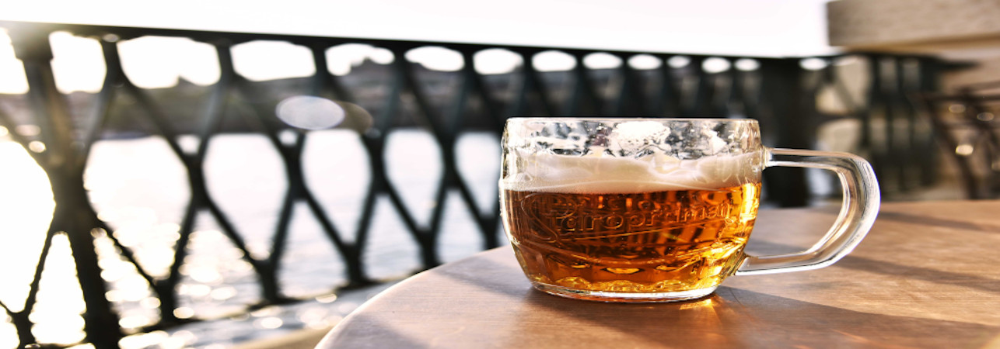This is a tasty ‘dessert beer’ that started with a relatively straight-forward stout recipe where I added (infused) home-grown cherries, dark chocolate and coconut prior to bottling. It was a pretty good stout without the additions, but it reached a new dimension with the additional flavors. This one would pair nicely with a dark chocolate cake or a cheesecake.
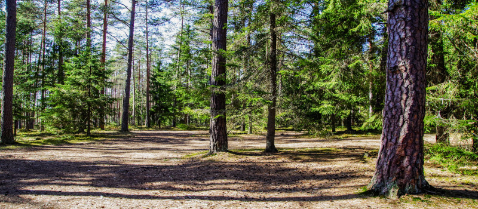